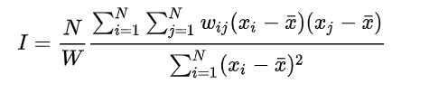
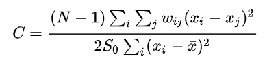
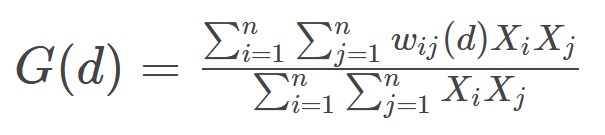

Show the code
pacman::p_load(sf,
sfdep,
tmap,
tidyverse)“Everything is related to everything else, but near things are more related than distant things.”
Describe how features differ from the values in the study area as a whole.

xi = observed value
x-bar = whole study area
xj = neighbour (affected by weight, Wij)
Moran I (Z value) is:
positive (I>0): Clustered, observations tend to be similar;
negative(I<0): Dispersed, observations tend to be dissimilar;
approximately zero: observations are arranged randomly over space.
Describing how features differ from their immediate neighbours.

Geary c (Z value) is:
Large c value (>1) : Dispersed, observations tend to be dissimilar;
Small c value (<1) : Clustered, observations tend to be similar;
c = 1: observations are arranged randomly over space.
Getis-Ord Global G statistic is concerned with the overall concentration or lack of concentration in all pairs that are neighbours given the definition of neighbouring areas.
The variable must contain only positive values to be used.

sfdep() is based on sf dataframe.
tidyverse framework.
sfdep() is wrapper of spdep()
Installing and Loading the R Packages
pacman::p_load(sf,
sfdep,
tmap,
tidyverse)hunan <- st_read(dsn = "data/geospatial",
layer = "Hunan")Reading layer `Hunan' from data source
`C:\rydialiang\isss626-aug24\In-class Exercise\In-class_Ex05\data\geospatial'
using driver `ESRI Shapefile'
Simple feature collection with 88 features and 7 fields
Geometry type: POLYGON
Dimension: XY
Bounding box: xmin: 108.7831 ymin: 24.6342 xmax: 114.2544 ymax: 30.12812
Geodetic CRS: WGS 84hunan2012 <- read_csv("data/aspatial/Hunan_2012.csv")hunan <- left_join(hunan,hunan2012) %>%
dplyr::select(1:4, 7, 15)equal <- tm_shape(hunan) +
tm_fill("GDPPC",
n = 5,
style = "equal") +
tm_borders(alpha = 0.5) +
tm_layout(main.title = "Equal interval classification")
quantile <- tm_shape(hunan) +
tm_fill("GDPPC",
n = 5,
style = "quantile") +
tm_borders(alpha = 0.5) +
tm_layout(main.title = "Equal quantile classification")
tmap_arrange(equal,
quantile,
asp=1,
ncol=2)
wm_q <- hunan %>%
mutate(nb = st_contiguity(geometry),
wt = st_weights(nb,
style = "W"),
.before = 1)moranI <- global_moran_test(wm_q$GDPPC,
wm_q$nb,
wm_q$wt)
glimpse(moranI)List of 6
$ statistic : Named num 4.74
..- attr(*, "names")= chr "Moran I statistic standard deviate"
$ p.value : num 1.09e-06
$ estimate : Named num [1:3] 0.30075 -0.01149 0.00435
..- attr(*, "names")= chr [1:3] "Moran I statistic" "Expectation" "Variance"
$ alternative: chr "greater"
$ method : chr "Moran I test under randomisation"
$ data.name : chr "x \nweights: listw \n"
- attr(*, "class")= chr [1:2] "htest" "list"Use global Moran I to test for randomisation.
Check compare p-value with alpha. If p-value is smaller than alpha, we reject Null hypothesis and there is statistical significance.
Moran I statistic is 0.300749970, positive undefined